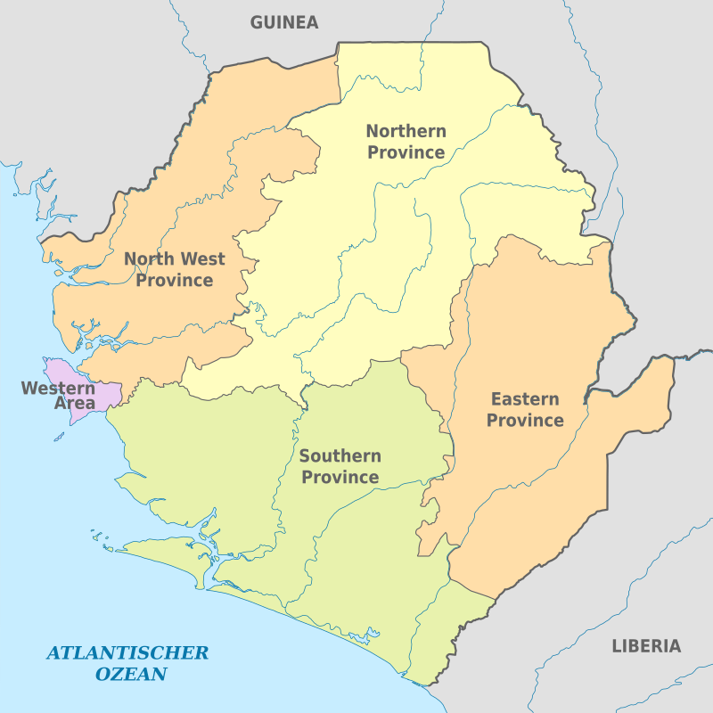

Sierra Leone is a country in West Africa, on the Atlantic Ocean. It’s known for the white-sand beaches lining the Freetown Peninsula. The capital city, Freetown, commemorates the nation’s slave-trade history with the Cotton Tree landmark and King’s Yard Gate. Both were known as places of refuge for returned slaves in the 18th and 19th centuries. Nearby Bunce Island was a key departure point during the Learn More 